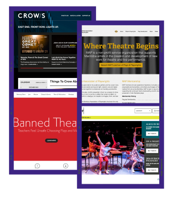
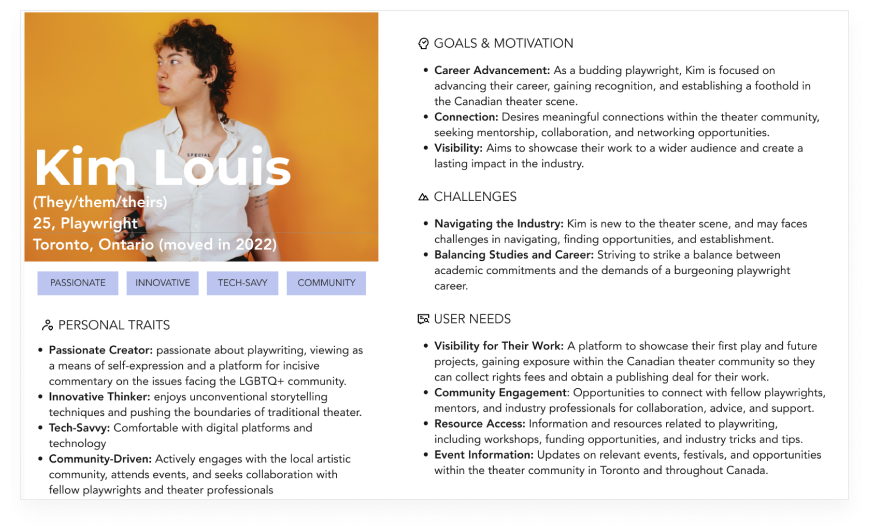

Research Objectives

We want to understand a person's thought processes and prior experiences when navigating websites for playwrights.
-
14To understand user’s goals and needs when navigating to a playwriting website.
- Build meaningful connections and engage with community members
- Advance educational opportunities regarding playwrights
- Increase opportunities to showcase professional work
-
14To understand the various elements that can influence a user in becoming a member of a playwriting organization.
- User experience
- Information Content
- Functionality
-
14To understand what makes a website for playwrights more useful in the advancement of their career.
- Increase connectivity among with other members
- Exclusive VIP features and access to members only
Problem
Emerging playwrights seek recognition and opportunities within the Canadian theater scene but face challenges in navigating the industry. They lack visibility, resources, and meaningful connections to showcase their work and advance their creative work. How might we develop a user-friendly platform that empowers users to network, access resources, and gain visibility within the theater community, enabling them to establish a sustainable career in the industry?
User Testing & Iterations

Design A
Design A represents “cool” “I am here to do business” “telling a story” “consistent”
Learn More